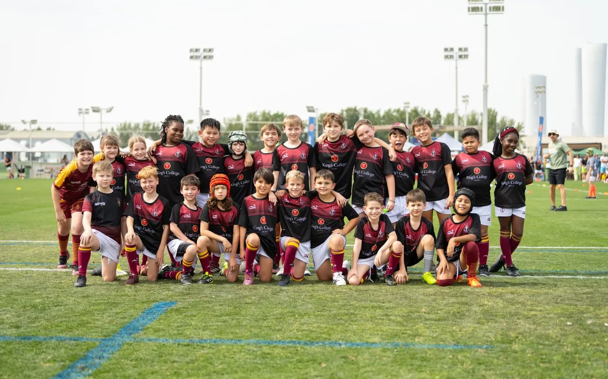
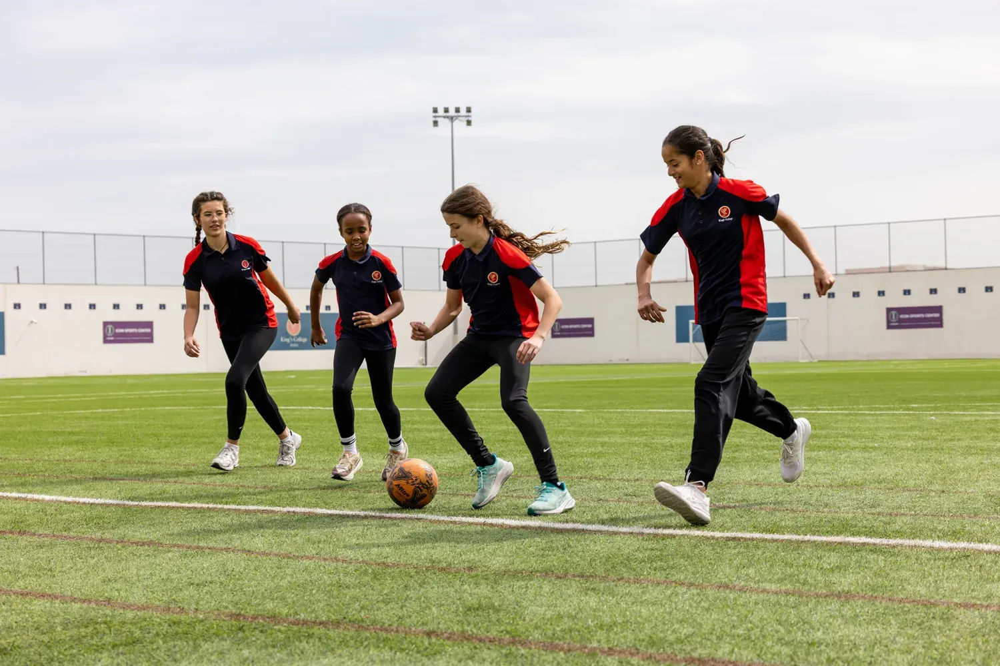
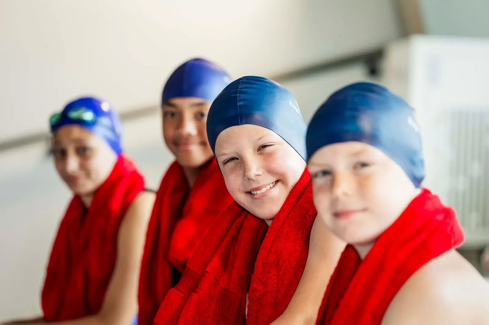
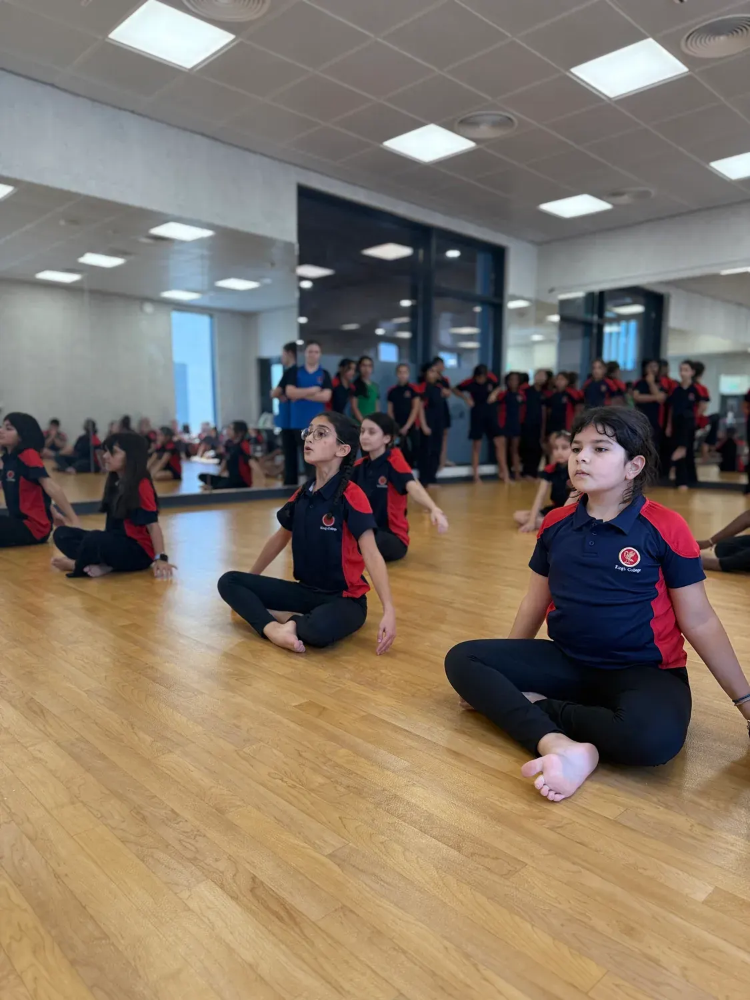
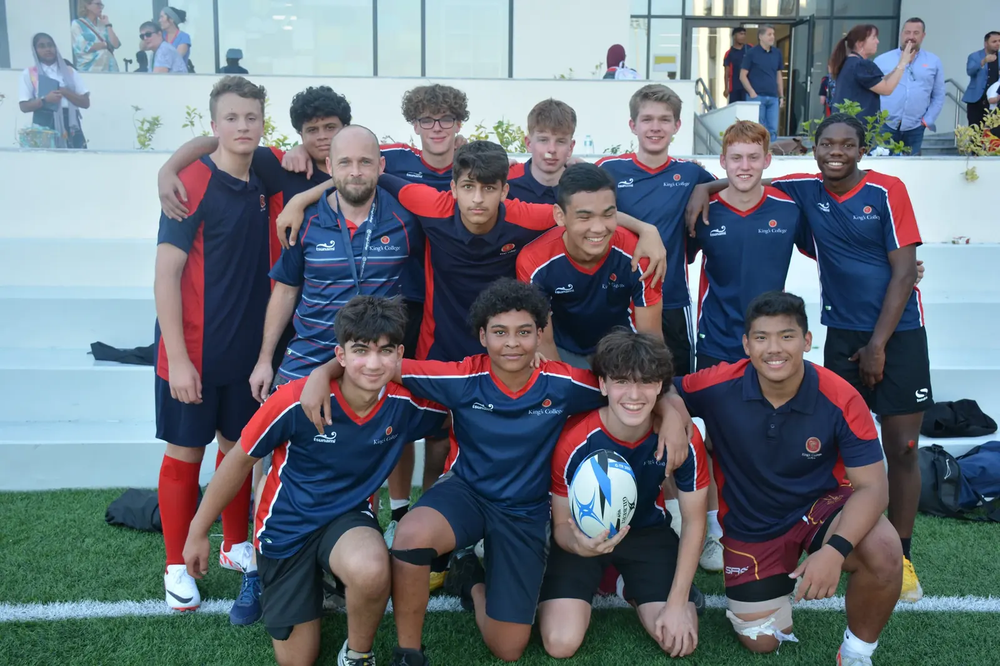
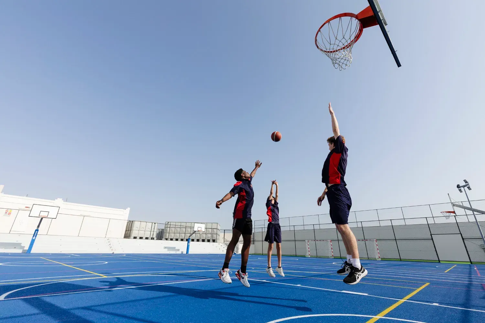

- Home
- Academy and Extra-Curricular Programme
Academy and Extra-Curricular Programme
Enriching Experiences Beyond Academic Excellence
At King’s College Doha, our Academy and Extra Curricular programme is designed to give pupils access to outstanding specialist experiences that enrich their learning. We partner with the leading academies in Qatar to offer a wide range of opportunities.
Our pupils benefit from expert coaching and high-quality tuition, designed to develop skill, confidence and a genuine passion for their chosen disciplines. Our programme extends beyond the classroom through a rich after-school offering, welcoming both our families and the wider community into a vibrant and inspiring environment.
By combining the strength of the King’s College name with the expertise of specialist coaches and practitioners, our programme ensures every pupil can explore their interests, develop their talents and thrive.

ICON Football Academy
Football at King’s College Doha is delivered in partnership with ICON Football Academy, one of Qatar’s leading youth football providers. Through engaging, high-energy coaching sessions, students develop technical ability, confidence, teamwork and game understanding in a positive and professional environment.
ICON’s experienced coaches create opportunities for players of all abilities, from those discovering football for the first time to students looking to further develop their competitive performance. Sessions promote discipline, resilience and enjoyment, helping students grow both on and off the pitch.

Hamilton Aquatics
Hamilton Aquatics brings world-class swimming provision to King’s College Doha, delivering structured programmes designed to build water confidence, technical ability and long-term athlete development. With a strong reputation across the region, Hamilton offers expert coaching for swimmers of all ages and abilities.
From learn-to-swim pathways to advanced squad development, sessions focus on progression, confidence and enjoyment within a safe and supportive environment. Hamilton’s highly qualified coaching team helps students develop essential life skills through sport, including resilience, focus and determination.

Blue Tigers Martial Arts
Blue Tigers Martial Arts delivers specialist martial arts coaching at King’s College Doha, helping students develop discipline, confidence, coordination and self-belief through structured training programmes.
With a strong emphasis on respect, perseverance and personal growth, sessions provide students with the opportunity to build physical skills alongside important character values. Whether beginners or experienced martial artists, students benefit from expert coaching within a motivating and supportive environment.

TRYBLE Rugby Academy
TRYBLE Rugby Academy delivers dynamic rugby coaching focused on teamwork, resilience and confidence. Open to students of all abilities, the programme introduces children to the values and excitement of rugby within a fun, inclusive and professionally coached environment.
Through expert coaching and high-quality player development opportunities, students learn technical rugby skills while developing leadership, communication and sportsmanship. TRYBLE’s partnership with King’s College Doha reflects a shared commitment to character development through sport.

World Class Facilities Available to Hire
The King’s Academy operates from the outstanding Mesaimeer campus, home to some of the finest school sports and enrichment facilities in Doha. Available for hire, the campus offers exceptional spaces for training, events, competitions and community activities, including:
- Football pitches
- 25m swimming pool
- Sports halls
- Fitness spaces
- Specialist activity areas
All facilities are designed to support both participation and high performance, providing an exceptional environment for athletes, teams and organisations to thrive.
